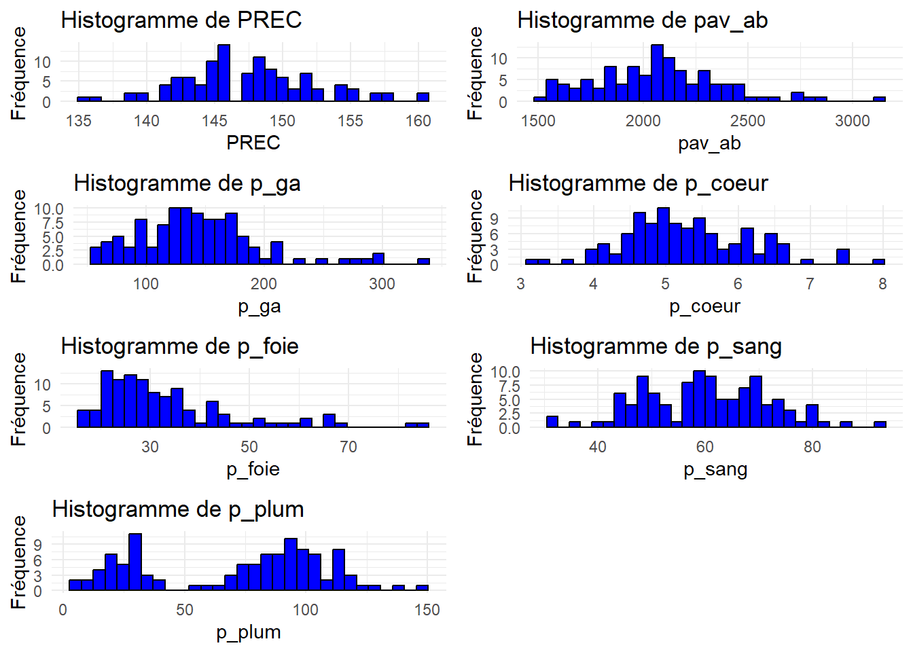
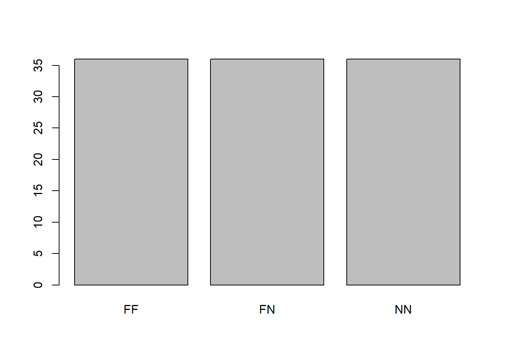
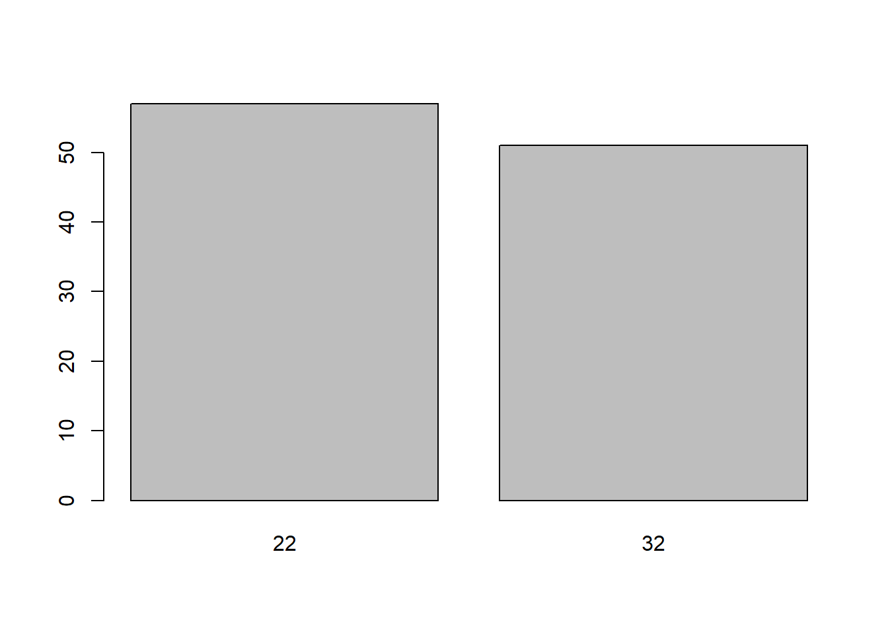
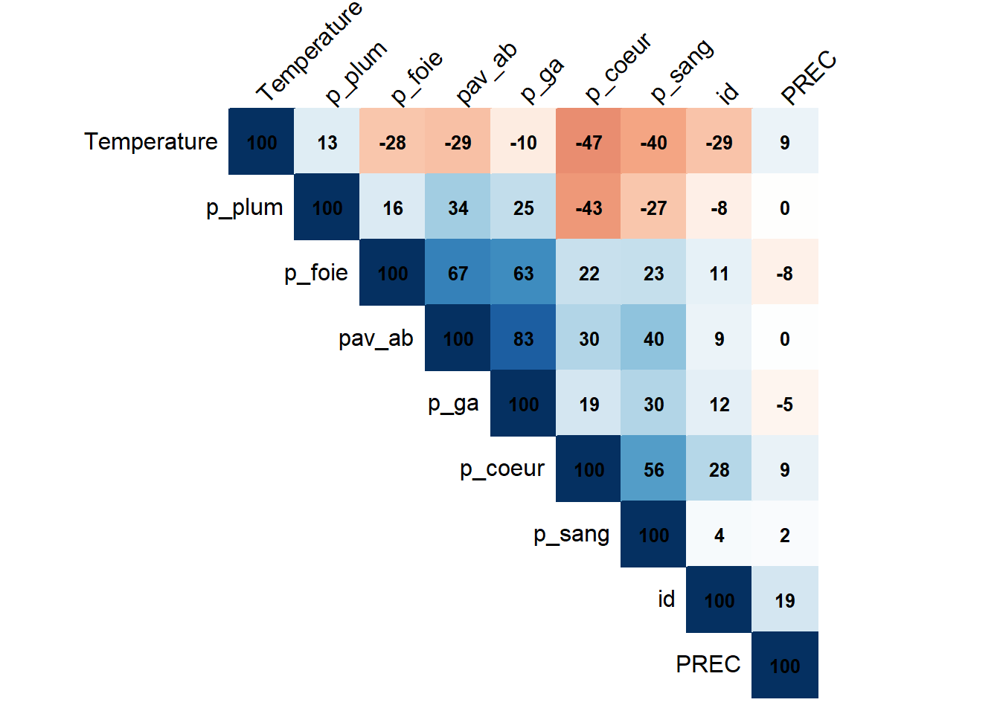
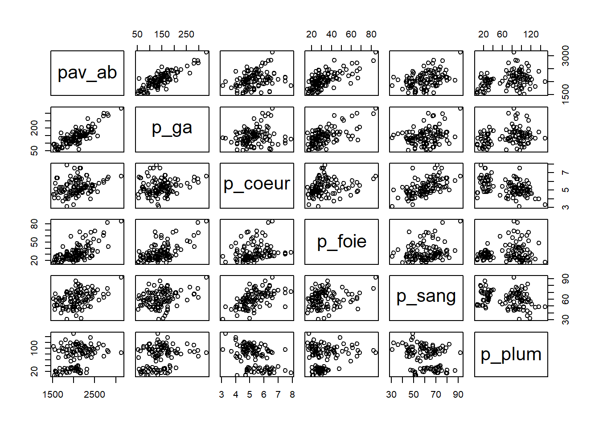
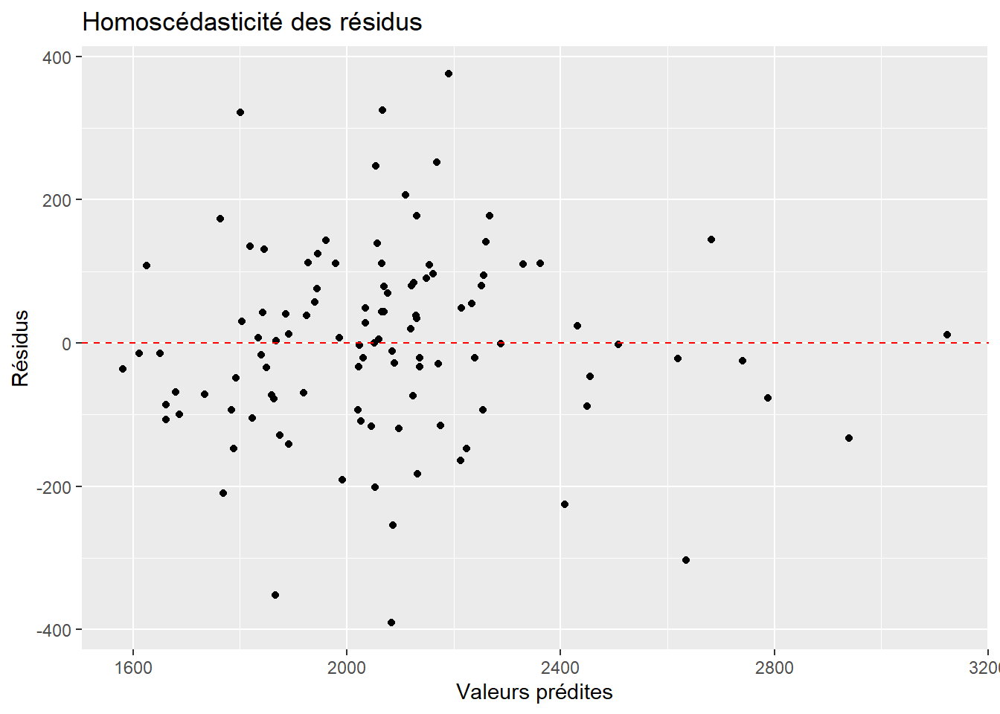
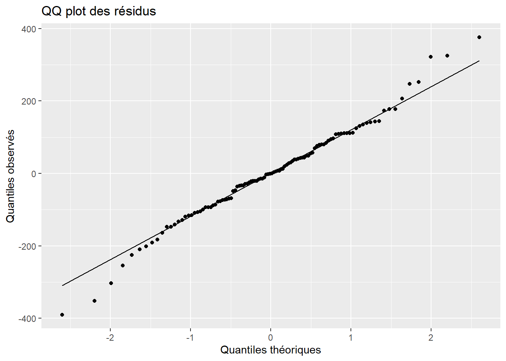

id genotype Temperature genT
Min. : 1.00 Length:108 Min. :22.00 Length:108
1st Qu.: 27.75 Class :character 1st Qu.:22.00 Class :character
Median : 54.50 Mode :character Median :22.00 Mode :character
Mean : 54.50 Mean :26.72
3rd Qu.: 81.25 3rd Qu.:32.00
Max. :108.00 Max. :32.00
PREC pav_ab p_ga p_coeur p_foie
Min. :135.0 Min. :1515 Min. : 53.1 Min. :3.100 Min. :16.10
1st Qu.:145.0 1st Qu.:1852 1st Qu.:111.4 1st Qu.:4.700 1st Qu.:24.45
Median :147.0 Median :2064 Median :139.7 Median :5.200 Median :29.35
Mean :147.5 Mean :2073 Mean :145.2 Mean :5.313 Mean :33.42
3rd Qu.:150.0 3rd Qu.:2259 3rd Qu.:172.1 3rd Qu.:5.900 3rd Qu.:37.08
Max. :160.0 Max. :3135 Max. :330.3 Max. :7.900 Max. :84.60
p_sang p_plum
Min. :31.00 Min. : 7.00
1st Qu.:51.00 1st Qu.: 31.00
Median :60.50 Median : 83.50
Mean :60.26 Mean : 71.31
3rd Qu.:69.00 3rd Qu.:100.25
Max. :92.00 Max. :150.00
Analyse des valeurs manquantes
# Fonction pour calculer la proportion de valeurs manquantes par variableproportion_valeurs_manquantes <-function(data) {# Calcul du nombre de valeurs manquantes par colonne nb_valeurs_manquantes <-sapply(data, function(x) sum(is.na(x)))# Calcul de la proportion de valeurs manquantes proportion_manquantes <- nb_valeurs_manquantes /nrow(data)# Création d'un dataframe pour le résultat resultat <-data.frame(Nombre = nb_valeurs_manquantes, Proportion = proportion_manquantes)return(resultat)}# Utilisation de la fonction avec la base de donnéesresultat <-proportion_valeurs_manquantes(poules)# Affichage du résultatresultat
Il n’y pas de données manquantes. Le jeu de données est propre.
Despcription des variables quantitatives
library(ggplot2)library(gridExtra)# Identifier les colonnes quantitativesvars_quantitatives <-sapply(poules, is.numeric)# Exclure les variables id et Temperaturevars_exclues <-c("id", "Temperature")# Initialiser une liste pour stocker les graphiquesplots <-list()# Créer un histogramme pour chaque variable quantitativefor (var innames(poules)[vars_quantitatives]) {if (!(var %in% vars_exclues)) { p <-ggplot(poules, aes_string(x = var)) +geom_histogram(bins =30, fill ="blue", color ="black") +theme_minimal() +labs(title =paste("Histogramme de", var), x = var, y ="Fréquence") plots[[var]] <- p }}
Warning: `aes_string()` was deprecated in ggplot2 3.0.0.
ℹ Please use tidy evaluation idioms with `aes()`.
ℹ See also `vignette("ggplot2-in-packages")` for more information.
# Afficher les graphiques côte à côtegrid.arrange(grobs = plots, ncol =2)

Les variables sont quantitatives et modélisables par des lois normales. Deux variable quantitative à savoir le genotype (3 modalités) et la température (car nous n’avons que deux modalités), que l’on peut modéliser par une loi de Bernoulli.
barplot(table(poules$genotype))

Les trois différents génotype sont à des proportions identiques
barplot(table(poules$Temperature))

Le nombre de poules élevés à une température de 22°C est plus important.
ETAPE2 : ANALYSE DES CORRELATIONS ENTRE VARIABLE QANTITATIVES
# Charger les packageslibrary(ggplot2)library(corrplot)
corrplot 0.92 loaded
donnees_quantitatives <- poules[, vars_quantitatives]# Calculer la matrice de corrélationmatrice_correlation <-cor(donnees_quantitatives, use ="complete.obs")# Créer la heatmap de corrélation avec des coefficients plus visiblescorrplot(matrice_correlation, method ="color", type ="upper", order ="hclust",tl.col ="black", tl.srt =45, addCoef.col ="black", # Couleur des coefficientscl.pos ="n", # Position de la légende de couleurcl.cex =1.2, # Taille de la légende de couleuraddCoefasPercent =TRUE, # Afficher les coefficients en pourcentagenumber.cex =0.8) # Taille des chiffres des coefficients

La température environnementale (Temperature) présente une corrélation négative modérée avec le poids avant abattage (pav_ab), indiquant que des températures plus élevées pourraient être associées à des poids avant abattage plus faibles.
Le poids avant abattage (pav_ab) est fortement corrélé avec le poids du gras abdominal (p_ga), le poids du cœur (p_coeur) et le poids du foie (p_foie), ce qui suggère que ces variables sont importantes pour prédire le poids avant abattage.
Le poids du cœur (p_coeur) présente une corrélation modérée avec le poids du sang (p_sang), ce qui peut indiquer une relation physiologique entre ces deux variables.
D’autres relations de corrélation moins prononcées peuvent également être observées entre d’autres variables.
QUESTION : ON CHERCHE A EXPLIQUER LE POIDS AVANT ABATAGE EN FONCTION DE p_ga, p_coeur, p_sang… nous allons choisir le poids avant abattage (pav_ab) comme variable réponse, car il s’agit d’une mesure importante dans le contexte de l’élevage de poules
# Sous-ensemble des données pour inclure uniquement les variables incluses dans le modèledonnees_modele <- poules[, c("pav_ab", "p_ga", "p_coeur", "p_foie", "p_sang", "p_plum")]# Représentation par pairepairs(donnees_modele)

La représentation par pair des co_variables nous pouce à modéliser la relation entre les variables par un modèle de régression linéaire
Les coefficients estimés indiquent l’effet de chaque variable explicative sur le poids avant abattage. Par exemple, pour chaque unité d’augmentation dans le poids du gras abdominal, le poids avant abattage augmente en moyenne de 3.0201 unités.Toutes les variables ont des p-values inférieures à 0.05, ce qui indique une relation significative avec le poids avant abattage.Le coefficient de détermination multiple ajusté (R² ajusté) est de 0.8052, ce qui signifie que les variables incluses dans le modèle expliquent ensemble environ 80,52% de la variation observée dans le poids avant abattage. Le F-statistic est de 89.48 avec une p-value pratiquement nulle, ce qui indique que le modèle dans son ensemble est statistiquement significatif.
A présent nous allons vérifier la véracité de cette interprétation du modèle en vérifiant si ce dernier respecte la linéarité, l’homocédasticité,la non autocorrélation, l’absence de multicolinéarité, la nullité de l’espérance des erreurs, et la normalité. Concernant l’hypothèse de la linéarité, la réponse est oui car les graphe pairs paris le démontre clairement.
# nullité de l'espérance des erreurs? réponse OUimoyenne_esperance <-mean(residuals(modele_lm))moyenne_esperance
Les objets suivants sont masqués depuis 'package:base':
as.Date, as.Date.numeric
durbin_test <-dwtest(modele_lm)durbin_test
Durbin-Watson test
data: modele_lm
DW = 1.8628, p-value = 0.2292
alternative hypothesis: true autocorrelation is greater than 0
la p_valeur du test de Durbin-Watson est supérieur à 0.05 donc on ne rejete pas Ho qui stipule qu’il pas d’autocorélation.
# Homocédasticitélibrary(ggplot2)# Calcul des résidusresidus <-residuals(modele_lm)# Création du data frame pour ggplotdata <-data.frame(Prediction =predict(modele_lm), Residus = residus)# Création du graphique avec ggplotggplot(data, aes(x = Prediction, y = Residus)) +geom_point() +geom_hline(yintercept =0, linetype ="dashed", color ="red") +labs(title ="Homoscédasticité des résidus",x ="Valeurs prédites",y ="Résidus")

Le graphe des résidus en fonction des valeurs prédictes n’a de forme particulière ce qui confirme l’homocédasticité des variables.
# Normalité?# Création du data frame pour ggplotdata <-data.frame(Residus = residus)# Création du graphique avec ggplotggplot(data, aes(sample = Residus)) +stat_qq() +stat_qq_line() +labs(title ="QQ plot des résidus",x ="Quantiles théoriques",y ="Quantiles observés")

Le qqplot montre que la majeur partie des points sont sur la droite de Henri. Par contre aux extrémité, les quantiles observés s’éloignent des quantiles théoriques.A mon avis la normalité des résidus est un peu métisée. Cependant, il serait important d’examiner attentivement la nature de ces écarts et d’évaluer s’ils sont significatifs ou non pour l’interprétation du modèle. Des actions correctives telles que l’identification et le traitement des outliers, l’exploration de transformations variables ou l’ajustement du modèle peuvent être nécessaires pour améliorer la normalité des résidus.
CONLUSION: Bien que le modèle de régression linéaire multiple semble expliquer une grande partie de la variance dans le poids avant abattage et que les coefficients des co-variables explicatives sont tous significatifs, les violations potentielles de l’hypothèse de normalité des résidus suggèrent que le modèle pourrait être amélioré ou que d’autres analyses sont nécessaires pour une interprétation plus robuste.